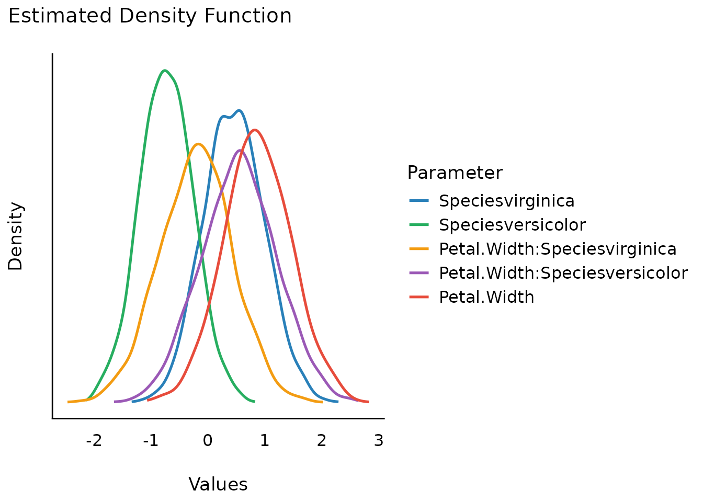
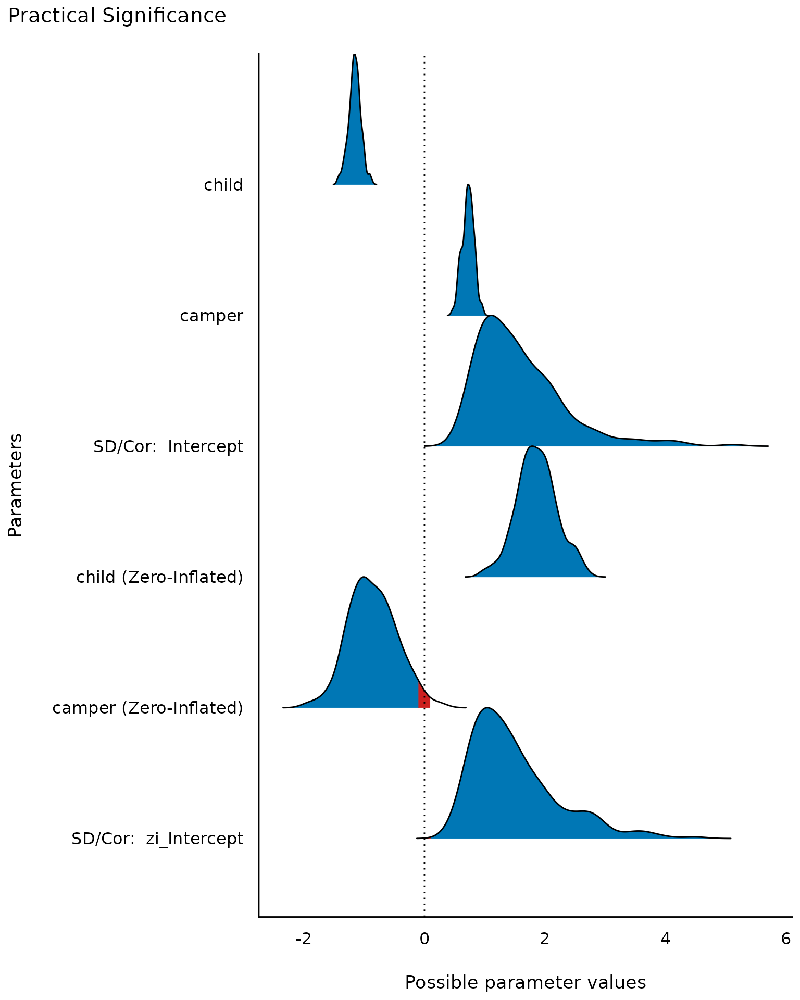
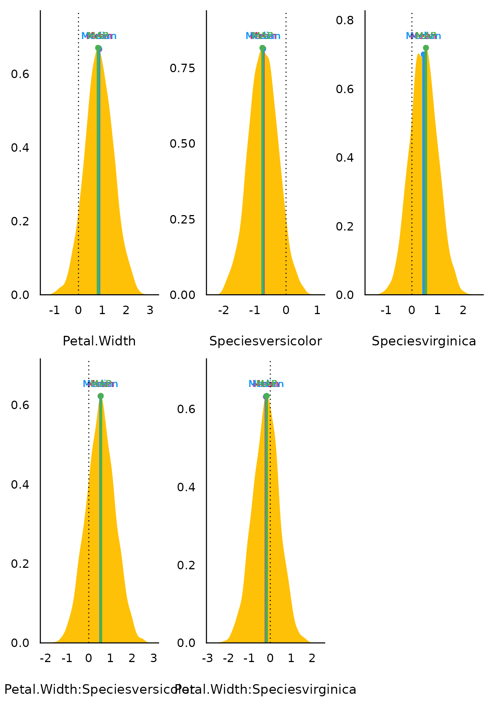
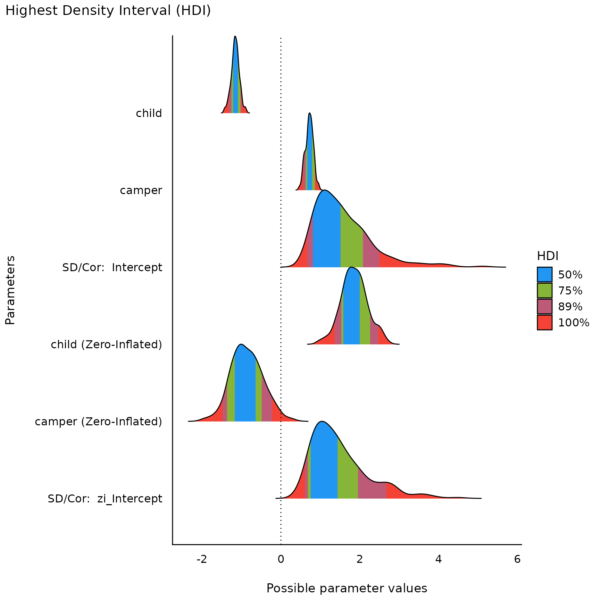
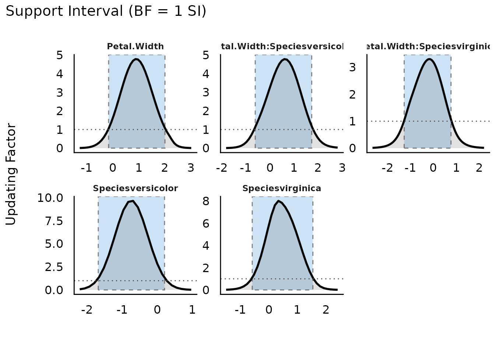
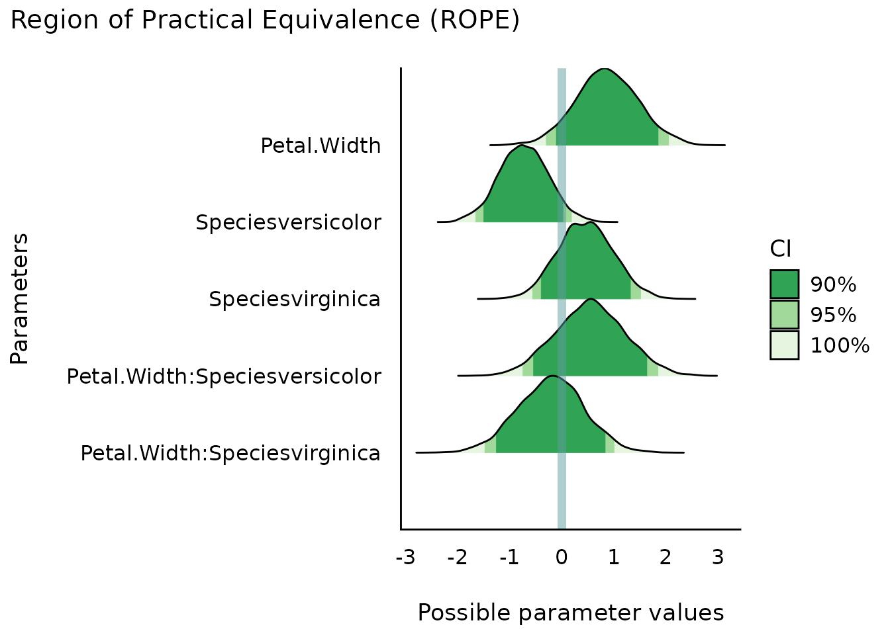
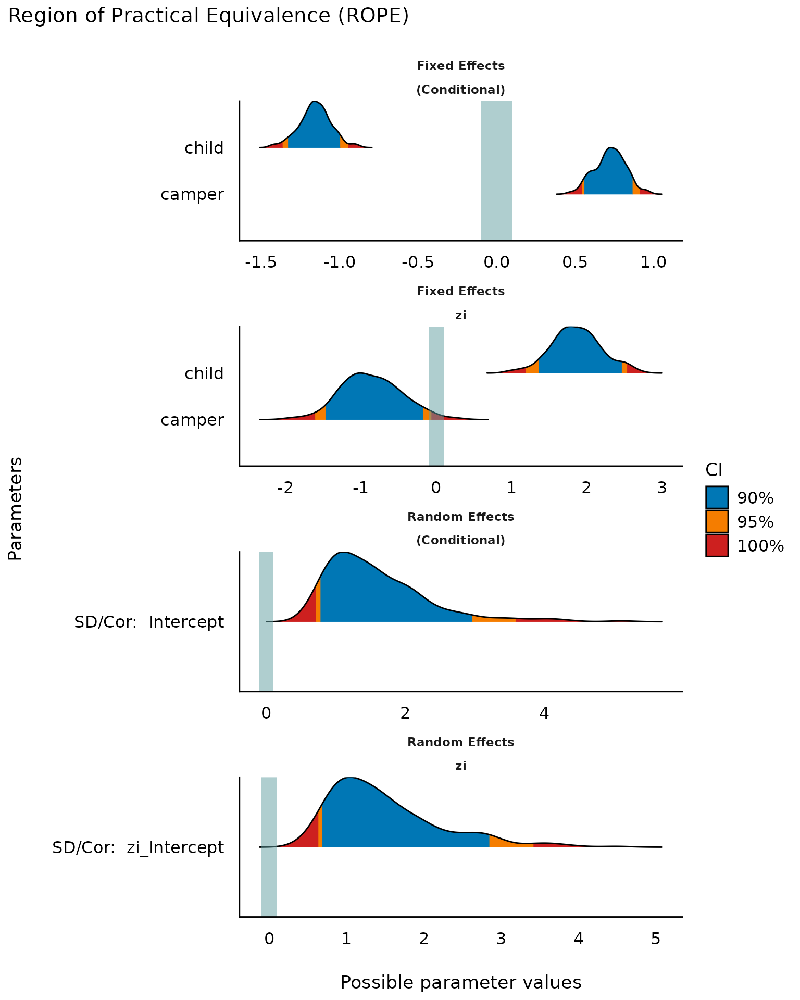
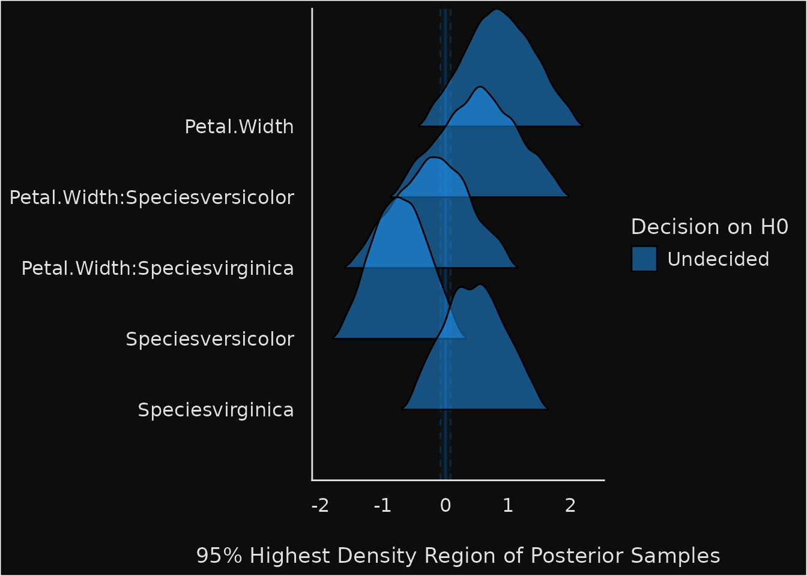
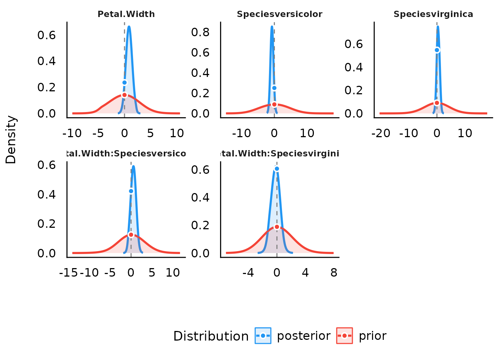
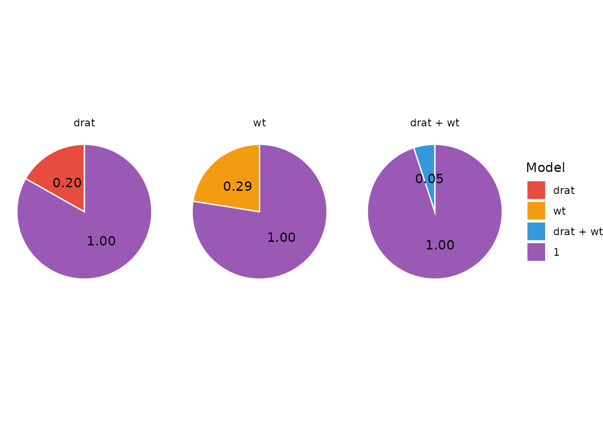

This vignette can be referred to by citing the package:
citation("see")
#> To cite package 'see' in publications use:
#>
#> Lüdecke et al., (2021). see: An R Package for Visualizing Statistical
#> Models. Journal of Open Source Software, 6(64), 3393.
#> https://doi.org/10.21105/joss.03393
#>
#> A BibTeX entry for LaTeX users is
#>
#> @Article{,
#> title = {{see}: An {R} Package for Visualizing Statistical Models},
#> author = {Daniel Lüdecke and Indrajeet Patil and Mattan S. Ben-Shachar and Brenton M. Wiernik and Philip Waggoner and Dominique Makowski},
#> journal = {Journal of Open Source Software},
#> year = {2021},
#> volume = {6},
#> number = {64},
#> pages = {3393},
#> doi = {10.21105/joss.03393},
#> }Introduction
Existing R packages allow users to easily fit a large variety of models and extract and visualize the posterior draws. However, most of these packages only return a limited set of indices (e.g., point-estimates and CIs). bayestestR package in easystats provides a comprehensive and consistent set of functions to analyze and describe posterior distributions generated by a variety of models objects, including popular modeling packages such as rstanarm, brms or BayesFactor.
For more, see: https://easystats.github.io/bayestestR/
Setup and Model Fitting
library(bayestestR)
library(insight)
library(see)
library(rstanarm)
library(ggplot2)
theme_set(theme_modern())
set.seed(123)
# model with fixed effects only
model <<- rstanarm::stan_glm(Sepal.Length ~ Petal.Width * Species, data = iris, refresh = 0)
# model with fixed and random effects as well as zero-inflation component
model2 <<- insight::download_model("brms_zi_3")Density Estimation
(related function documentation)
Plotting density estimations of Bayesian regression models will produce plots of the posterior distributions from model parameters, i.e. posterior interval estimates from MCMC draws.
By default, all distributions are “stacked”, i.e. overlaying each other.
result <- estimate_density(model)
plot(result)
To get ridge lines separated by parameters, use
stack = FALSE.
plot(result, stack = FALSE)
Adding Prior Samples
For many plots, when the model has defined priors, you can add a
layer from the prior distribution for the parameters with
priors = TRUE.
plot(result, stack = FALSE, priors = TRUE)
Density Estimation of Posterior Samples from
describe_posterior()
(related function documentation)
There is a convenient short cut to plot posterior samples directly
from bayestestR::describe_posterior(), which internally
calls estimate_density() and plot():
result <- describe_posterior(model)
plot(result)
Probability of Direction (pd)
(related function documentation)
The probability of direction (also known as the maximum probability of effect - MPE) varies between 50% and 100% (i.e., 0.5 and 1) and can be interpreted as the probability (expressed in percentage) that a parameter (described by its posterior distribution) is strictly positive or negative (whichever is the most probable).
It is mathematically defined as the proportion of the posterior distribution that is of the median’s sign. Although differently expressed, this index is fairly similar (i.e., is strongly correlated) to the frequentist p-value
result <- p_direction(model)
result
#> Probability of Direction
#>
#> Parameter | pd
#> --------------------------------------
#> (Intercept) | 100%
#> Petal.Width | 92.97%
#> Speciesversicolor | 94.08%
#> Speciesvirginica | 80.53%
#> Petal.Width:Speciesversicolor | 79.20%
#> Petal.Width:Speciesvirginica | 62.60%
plot(result)
For more complex models with different components, each component is
displayed in a separate facet. Use n_columns to define the
layout, i.e. how many columns are used to display the facets.
result <- p_direction(model2, effects = "all", component = "all")
result
#> Probability of Direction
#>
#> Parameter | pd
#> --------------------
#> (Intercept) | 90.00%
#> child | 100%
#> camper | 100%
#>
#> # Fixed effects (zero-inflated)
#>
#> Parameter | pd
#> --------------------
#> (Intercept) | 78.00%
#> child | 100%
#> camper | 98.40%
#>
#> # Random effects (conditional) (SD/Cor: persons)
#>
#> Parameter | pd
#> ------------------
#> (Intercept) | 100%
#>
#> # Random effects (zero-inflated) (SD/Cor: persons)
#>
#> Parameter | pd
#> ------------------
#> (Intercept) | 100%
plot(result)
plot(result, n_columns = NULL)
Adding Prior Samples
result <- p_direction(model)
plot(result, priors = TRUE)Practical Significance
(related function documentation)
The probability of practical significance is conceptualized as a unidirectional equivalence test. It returns the probability that an effect is above a given threshold corresponding to a negligible effect in the median’s direction.
Mathematically, it is defined as the proportion of the posterior distribution of the median sign above the threshold.
result <- p_significance(model)
result
#> Practical Significance (threshold: 0.08)
#>
#> Parameter | ps
#> ------------------------------------
#> (Intercept) | 1.00
#> Petal.Width | 0.91
#> Speciesversicolor | 0.92
#> Speciesvirginica | 0.76
#> Petal.Width:Speciesversicolor | 0.76
#> Petal.Width:Speciesvirginica | 0.57
plot(result)
result <- p_significance(model2, effects = "all", component = "all", verbose = FALSE)
result
#> Practical Significance (threshold: 0.10)
#>
#> Parameter | ps
#> ------------------
#> (Intercept) | 0.88
#> child | 1.00
#> camper | 1.00
#>
#> # Fixed effects (zero-inflated)
#>
#> Parameter | ps
#> ------------------
#> (Intercept) | 0.73
#> child | 1.00
#> camper | 0.96
#>
#> # Random effects (conditional) (SD/Cor: persons)
#>
#> Parameter | ps
#> ------------------
#> (Intercept) | 1.00
#>
#> # Random effects (zero-inflated) (SD/Cor: persons)
#>
#> Parameter | ps
#> ------------------
#> (Intercept) | 1.00
plot(result)
plot(result, n_columns = NULL)

Point Estimates
(related function documentation)
point_estimate() computes various point-estimates, such
as the mean, the median or the MAP, to describe posterior distributions.
The plot()-method shows the posterior distribution of
related parameters and emphasizes the point estimate within the
plot.
result <- point_estimate(model)
result
#> Point Estimate
#>
#> Parameter | Median | Mean | MAP
#> ------------------------------------------------------
#> (Intercept) | 4.79 | 4.79 | 4.79
#> Petal.Width | 0.86 | 0.87 | 0.82
#> Speciesversicolor | -0.74 | -0.73 | -0.76
#> Speciesvirginica | 0.46 | 0.46 | 0.55
#> Petal.Width:Speciesversicolor | 0.55 | 0.54 | 0.56
#> Petal.Width:Speciesvirginica | -0.20 | -0.21 | -0.17
plot(result)
result <- point_estimate(model, centrality = c("map", "mean"))
result
#> Point Estimate
#>
#> Parameter | Mean | MAP
#> ---------------------------------------------
#> (Intercept) | 4.79 | 4.79
#> Petal.Width | 0.87 | 0.82
#> Speciesversicolor | -0.73 | -0.76
#> Speciesvirginica | 0.46 | 0.55
#> Petal.Width:Speciesversicolor | 0.54 | 0.56
#> Petal.Width:Speciesvirginica | -0.21 | -0.17
plot(result, panel = FALSE)[[2]]

Highest Density Interval (HDI)
(related function documentation)
hdi() computes the Highest Density Interval (HDI) of
posterior distributions. All points within this interval have a higher
probability density than points outside the interval.
The HDI can be used in the context of uncertainty characterisation of posterior distributions as Credible Interval (CI).
result <- hdi(model, ci = c(0.5, 0.75, 0.89, 0.95))
result
#> Highest Density Interval
#>
#> Parameter | 50% HDI | 75% HDI | 89% HDI | 95% HDI
#> -----------------------------------------------------------------------------------------------
#> (Intercept) | [ 4.69, 4.91] | [ 4.62, 4.98] | [ 4.53, 5.05] | [ 4.48, 5.11]
#> Petal.Width | [ 0.53, 1.33] | [ 0.22, 1.58] | [-0.09, 1.82] | [-0.25, 2.10]
#> Speciesversicolor | [-1.03, -0.40] | [-1.32, -0.25] | [-1.44, 0.04] | [-1.66, 0.20]
#> Speciesvirginica | [ 0.08, 0.80] | [-0.19, 1.04] | [-0.37, 1.31] | [-0.58, 1.47]
#> Petal.Width:Speciesversicolor | [ 0.04, 0.93] | [-0.25, 1.30] | [-0.53, 1.59] | [-0.78, 1.81]
#> Petal.Width:Speciesvirginica | [-0.53, 0.31] | [-0.91, 0.54] | [-1.18, 0.85] | [-1.41, 1.08]
plot(result) + scale_fill_flat()
result <- hdi(model2, ci = c(0.5, 0.75, 0.89), effects = "all", component = "all")
plot(result, n_columns = 2) + scale_fill_metro()
plot(result, n_columns = NULL) + scale_fill_material()
Support Interval
(related function documentation)
Plotting the result of a call to si() results in a plot
presenting the prior and posterior distributions for each parameter
(note that by default show_intercept = FALSE). The support
interval will be denoted by a shaded border.
library(logspline) # needed for `si()`
result <- si(model, verbose = FALSE)
result
#> Support Interval
#>
#> Parameter | BF = 1 SI | Effects | Component
#> ---------------------------------------------------------------------
#> (Intercept) | [ 4.39, 5.18] | fixed | conditional
#> Petal.Width | [-0.16, 2.00] | fixed | conditional
#> Speciesversicolor | [-1.68, 0.21] | fixed | conditional
#> Speciesvirginica | [-0.59, 1.54] | fixed | conditional
#> Petal.Width:Speciesversicolor | [-0.61, 1.73] | fixed | conditional
#> Petal.Width:Speciesvirginica | [-1.27, 0.77] | fixed | conditional
plot(result) +
scale_color_metro(palette = "ice") +
scale_fill_metro(palette = "ice")
plot(result, support_only = TRUE) +
scale_color_metro(palette = "ice") +
scale_fill_metro(palette = "ice")
Region of Practical Equivalence (ROPE)
(related function documentation)
rope() computes the proportion (in percentage) of the
HDI of a posterior distribution that lies within a region of practical
equivalence (ROPE).
The related plot()-method plots posterior distributions,
coloring different HDI levels, and adds a “rope” region to the plot that
indicates which portion of the posterior distributions lies inside (and
outside) the ROPE.
result <- rope(model, ci = c(0.9, 0.95))
result
#> # Proportions of samples inside the ROPE [-0.08, 0.08]:
#>
#> ROPE for the 90% HDI:
#>
#> Parameter | Inside ROPE
#> -------------------------------------------
#> (Intercept) | 0.00 %
#> Petal.Width | 4.11 %
#> Speciesversicolor | 3.86 %
#> Speciesvirginica | 8.97 %
#> Petal.Width:Speciesversicolor | 7.17 %
#> Petal.Width:Speciesvirginica | 11.33 %
#>
#>
#> ROPE for the 95% HDI:
#>
#> Parameter | Inside ROPE
#> -------------------------------------------
#> (Intercept) | 0.00 %
#> Petal.Width | 3.89 %
#> Speciesversicolor | 4.63 %
#> Speciesvirginica | 8.50 %
#> Petal.Width:Speciesversicolor | 6.79 %
#> Petal.Width:Speciesvirginica | 10.74 %
plot(result, rope_color = "red") +
scale_fill_brewer(palette = "Greens", direction = -1)
result <- rope(model2, ci = c(0.9, 0.95), effects = "all", component = "all", verbose = FALSE)
result
#> # Proportions of samples inside the ROPE [-0.10, 0.10]:
#>
#> ROPE for the 90% HDI:
#>
#> # Fixed Effects (Conditional Model)
#>
#> Parameter | Inside ROPE
#> -----------------------
#> Intercept | 2.68 %
#> child | 0.00 %
#> camper | 0.00 %
#>
#> # Fixed Effects (Zero-Inflated Model)
#>
#> Parameter | Inside ROPE
#> -----------------------
#> Intercept | 11.16 %
#> child | 0.00 %
#> camper | 0.00 %
#>
#> # Random Effects (Conditional Model)
#>
#> Parameter | Inside ROPE
#> ------------------------------------
#> SD persons (Intercept) | 0.00 %
#>
#> # Random Effects (Zero-Inflated Model)
#>
#> Parameter | Inside ROPE
#> ------------------------------------
#> SD persons (Intercept) | 0.00 %
#>
#>
#> ROPE for the 95% HDI:
#>
#> # Fixed Effects (Conditional Model)
#>
#> Parameter | Inside ROPE
#> -----------------------
#> Intercept | 2.54 %
#> child | 0.00 %
#> camper | 0.00 %
#>
#> # Fixed Effects (Zero-Inflated Model)
#>
#> Parameter | Inside ROPE
#> -----------------------
#> Intercept | 10.59 %
#> child | 0.00 %
#> camper | 0.85 %
#>
#> # Random Effects (Conditional Model)
#>
#> Parameter | Inside ROPE
#> ------------------------------------
#> SD persons (Intercept) | 0.00 %
#>
#> # Random Effects (Zero-Inflated Model)
#>
#> Parameter | Inside ROPE
#> ------------------------------------
#> SD persons (Intercept) | 0.00 %
plot(result, rope_color = "grey70") +
scale_fill_social()
Test for Practical Equivalence
(related function documentation)
The test for practical equivalence is based on the “HDI+ROPE decision rule” to check whether parameter values should be accepted or rejected against an explicitly formulated “null hypothesis” (i.e., a ROPE). In other words, it checks the percentage of the 89% HDI that is the null region (the ROPE). If this percentage is sufficiently low, the null hypothesis is rejected. If this percentage is sufficiently high, the null hypothesis is accepted.
result <- equivalence_test(model, verbose = FALSE)
result
#> # Test for Practical Equivalence
#>
#> ROPE: [-0.08 0.08]
#>
#> Parameter | H0 | inside ROPE | 95% HDI
#> -----------------------------------------------------------------------
#> (Intercept) | Rejected | 0.00 % | [4.48, 5.11]
#> Petal.Width | Undecided | 3.89 % | [-0.30, 2.06]
#> Speciesversicolor | Undecided | 4.63 % | [-1.66, 0.20]
#> Speciesvirginica | Undecided | 8.50 % | [-0.56, 1.52]
#> Petal.Width:Speciesversicolor | Undecided | 6.79 % | [-0.75, 1.86]
#> Petal.Width:Speciesvirginica | Undecided | 10.74 % | [-1.49, 1.01]
plot(result) +
theme_blackboard() +
scale_fill_material()
result <- equivalence_test(model, ci = c(0.89, 0.95))
result
#> # Test for Practical Equivalence
#>
#> ROPE: [-0.08 0.08]
#>
#> Parameter | H0 | inside ROPE | 89% HDI
#> -----------------------------------------------------------------------
#> (Intercept) | Rejected | 0.00 % | [4.53, 5.06]
#> Petal.Width | Undecided | 4.16 % | [-0.09, 1.83]
#> Speciesversicolor | Undecided | 3.34 % | [-1.48, 0.01]
#> Speciesvirginica | Undecided | 9.07 % | [-0.37, 1.30]
#> Petal.Width:Speciesversicolor | Undecided | 7.25 % | [-0.52, 1.61]
#> Petal.Width:Speciesvirginica | Undecided | 11.46 % | [-1.22, 0.81]
#>
#>
#> Parameter | H0 | inside ROPE | 95% HDI
#> -----------------------------------------------------------------------
#> (Intercept) | Rejected | 0.00 % | [4.48, 5.11]
#> Petal.Width | Undecided | 3.89 % | [-0.30, 2.06]
#> Speciesversicolor | Undecided | 4.63 % | [-1.66, 0.20]
#> Speciesvirginica | Undecided | 8.50 % | [-0.56, 1.52]
#> Petal.Width:Speciesversicolor | Undecided | 6.79 % | [-0.75, 1.86]
#> Petal.Width:Speciesvirginica | Undecided | 10.74 % | [-1.49, 1.01]
plot(result) +
theme_abyss() +
scale_fill_flat()
result <- equivalence_test(
model2,
ci = c(0.89, 0.95),
effects = "all",
component = "all",
verbose = FALSE
)
result
#> # Test for Practical Equivalence
#>
#> ROPE: [-0.10 0.10]
#>
#> # Fixed Effects (Conditional Model)
#>
#> Parameter | H0 | inside ROPE | 89% HDI
#> ----------------------------------------------------
#> Intercept | Undecided | 2.70 % | [-0.32, 2.29]
#> child | Rejected | 0.00 % | [-1.32, -1.00]
#> camper | Rejected | 0.00 % | [0.56, 0.87]
#>
#> # Fixed Effects (Zero-Inflated Model)
#>
#> Parameter | H0 | inside ROPE | 89% HDI
#> ----------------------------------------------------
#> Intercept | Undecided | 11.26 % | [-1.60, 0.48]
#> child | Rejected | 0.00 % | [1.37, 2.46]
#> camper | Rejected | 0.00 % | [-1.45, -0.21]
#>
#> # Random Effects (Conditional Model)
#>
#> Parameter | H0 | inside ROPE | 89% HDI
#> -----------------------------------------------------------
#> SD/Cor: (Intercept) | Rejected | 0.00 % | [0.79, 2.91]
#>
#> # Random Effects (Zero-Inflated Model)
#>
#> Parameter | H0 | inside ROPE | 89% HDI
#> -----------------------------------------------------------
#> SD/Cor: (Intercept) | Rejected | 0.00 % | [0.70, 2.82]
#>
#>
#> # Fixed Effects (Conditional Model)
#>
#> Parameter | H0 | inside ROPE | 95% HDI
#> ----------------------------------------------------
#> Intercept | Undecided | 2.54 % | [-0.81, 2.51]
#> child | Rejected | 0.00 % | [-1.36, -0.94]
#> camper | Rejected | 0.00 % | [0.54, 0.91]
#>
#> # Fixed Effects (Zero-Inflated Model)
#>
#> Parameter | H0 | inside ROPE | 95% HDI
#> ----------------------------------------------------
#> Intercept | Undecided | 10.59 % | [-2.03, 0.89]
#> child | Rejected | 0.00 % | [1.19, 2.54]
#> camper | Undecided | 0.85 % | [-1.61, -0.07]
#>
#> # Random Effects (Conditional Model)
#>
#> Parameter | H0 | inside ROPE | 95% HDI
#> --------------------------------------------------------------
#> SD persons (Intercept) | Rejected | 0.00 % | [0.71, 3.58]
#>
#> # Random Effects (Zero-Inflated Model)
#>
#> Parameter | H0 | inside ROPE | 95% HDI
#> --------------------------------------------------------------
#> SD persons (Intercept) | Rejected | 0.00 % | [0.63, 3.41]
plot(result, n_columns = 3) + theme_modern()
Bayes Factors (BFs)
Bayes Factors for Model Parameters
(related function documentation)
Plotting the result of a call to
bayesfactor_parameters() results in a plot presenting the
prior and posterior distributions for each parameter (note that by
default show_intercept = FALSE). When a point null was
tested, two dots represent the density of the null at the value - the
ratio of their heights is the value of the Savage-Dickey Bayes
factor:
result <- bayesfactor_parameters(model, verbose = FALSE)
result
#> Bayes Factor (Savage-Dickey density ratio)
#>
#> Parameter | BF
#> ----------------------------------------
#> (Intercept) | 1.05e+52
#> Petal.Width | 0.598
#> Speciesversicolor | 0.353
#> Speciesvirginica | 0.166
#> Petal.Width:Speciesversicolor | 0.296
#> Petal.Width:Speciesvirginica | 0.311
#>
#> * Evidence Against The Null: 0
plot(result) +
scale_color_material() +
scale_fill_material()
When an interval null was tested, two dashed lines mark the edges of the null interval at the value - the Bayes factor represents the degree by which the distribution mass of the posterior has shifted outside or inside the null interval relative to the prior distribution:
result <- bayesfactor_parameters(model, null = rope_range(model))
result
#> Bayes Factor (Null-Interval)
#>
#> Parameter | BF
#> ----------------------------------------
#> (Intercept) | 4.93e+51
#> Petal.Width | 0.605
#> Speciesversicolor | 0.332
#> Speciesvirginica | 0.159
#> Petal.Width:Speciesversicolor | 0.275
#> Petal.Width:Speciesvirginica | 0.293
#>
#> * Evidence Against The Null: [-0.083, 0.083]
plot(result) +
scale_color_material() +
scale_fill_material()
Bayes Factors for Model Comparison
(related function documentation)
lm0 <- lm(qsec ~ 1, data = mtcars)
lm1 <- lm(qsec ~ drat, data = mtcars)
lm2 <- lm(qsec ~ wt, data = mtcars)
lm3 <- lm(qsec ~ drat + wt, data = mtcars)
result <- bayesfactor_models(lm1, lm2, lm3, denominator = lm0)
result
#> Bayes Factors for Model Comparison
#>
#> Model BF
#> [lm1] drat 0.202
#> [lm2] wt 0.290
#> [lm3] drat + wt 0.053
#>
#> * Against Denominator: [lm0] (Intercept only)
#> * Bayes Factor Type: BIC approximationPizza plots are a visual way of representing the posterior probabilities of several models, with ratio of the areas of any two models corresponding to their posterior odds.1 It is possible to plot all compared models on one (pizza) pie:
plot(result, n_pies = "one", value = "probability") +
scale_fill_pizza(reverse = TRUE)
But it is also possible to plot one pizza for each model and the denominator model (and who doesn’t like more pizza?):
plot(result, n_pies = "many", value = "BF") +
scale_fill_flat(palette = "rainbow", reverse = TRUE)